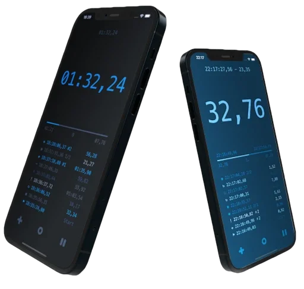
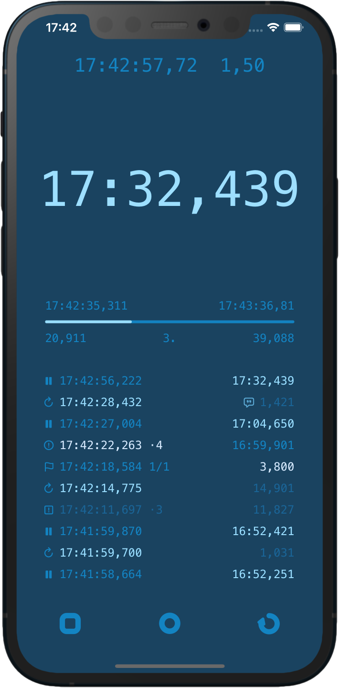
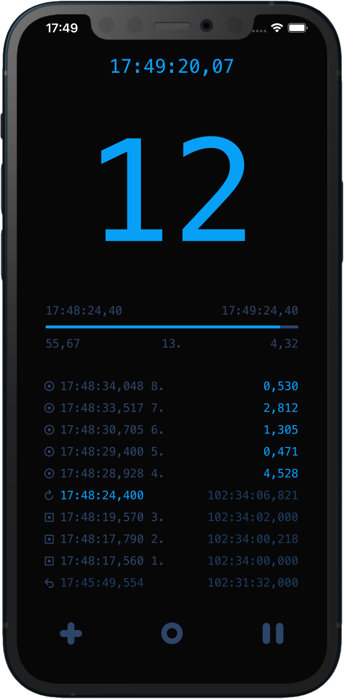
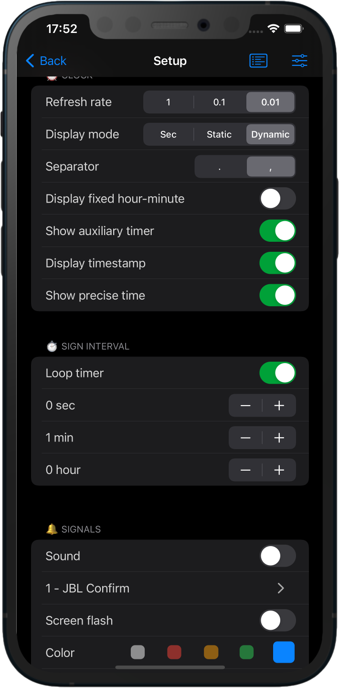
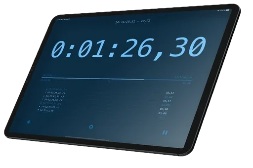

Set it up however you want, use it for whatever you want
Complex multi-purpose use, yet simple and quick to operate. In addition to the usual stopwatch functions, it repeats the specified time intervals, counts them and signals at the end of the loop and starts again until you stop it.
It measures lap time, counts idle time, can be used for manual counting, note taking, time stamps. Records everything in the event log, which can later be modified, saved or shared.
You can use it for sports, cooking, media productions or for anything where you need to keep a constant cyclical reminder of the time that has passed, or when time-bound notes are needed.
We're working to make Signee Timer better. We hope you enjoy it.

Precise measurement
Reliable in all conditions, low resource demand

Customizable
Everything can be fine-tuned and assigned to profiles

Detailed logging
Each event is displayed separately, can be edited and saved
Description of capabilities

- Counts the precise elapsed time, rounds, laps, idle and remaining and total time
- Manual counter for time notes, markers
- Optionally saves the session and reloads it after restarting the app
- Logs all activities, takes notes, marks, edits and deletes entries
- Says the elapsed time or laps, customises pre- and postfix words
- Flashes the screen, vibrates or beeps sounds on a loop end
- Can be configured in many different ways, has a dynamic big number display, or static seconds counter
- Uses simple widget extension
User manual
Get to know Signee Timer and make it work the way you need. The user manual explains the clock display, interval timer, signals, speech, counter and history settings, helping you tailor the app to your everyday routines.
Signee Timer includes many features and configuration options, so we recommend reading the user manual
Development and future plans
- Remote display support, using a Mac or iPad as a large screen
- Photo finish detection based on changes in the camera image
- Managing multiple counters and signals simultaneously
- Tabata and other sports features
Time Precision
DateX is a small but useful project of our own: a free, open-source library that enables cross-platform development while avoiding the imprecise floating-point time representation used by Foundation's Date structure. Instead, it uses a traditional 2 × 32-bit integer representation for accurate and precise time measurement. It retains the functionality of the original Date type: simply replace references to Date with DateX in your project to benefit from precise timekeeping.
Try it, share your thoughts, and help us improve it, view the project on GitHub
Contact
The app is free for everyone. We are not responsible for any problems that may arise from its use. If you have any feedback or suggestions for improvements, please send us an email.
Data Not Collected
The developer does not collect any data from this app. Please read the official privacy and legal notice. It is made with love and free for everyone. If you enjoy it, please leave a rating on the App Store. I welcome all feedback and comments.
Version history
1.5
- Timer sequences
- Status icons
- Improved history
- iPad support
1.4
- Massive code refactoring, new core engine, more precise time counting
- Notifications, signs when the app is background or closed
- Time loop progress percent indicator
- Sensitive buttons, to start or stop the exact time
- Localisation languages: German, Spanish, Hungarian
- Guide tour and help
1.3
- Quick launching actions, easy start with the desired setting - from the home screen
- Editing history notes, full screen history
- Copying time to clipboard automatically
- Quick time settings panel, loop period reset, maximum time increased to 24 hours
- Optional three decimal seconds display
1.2
- New counter mode, shows only the elapsed laps. You can touch the timer to increment manually
- Larger history when the interval counter is inactive
- Vibrate modes, feedback on elapsed loops
- Says the elapsed loop number with prefix and postfix words
- Auto mark at loop ends
- Optional interval timer reset on new lap
- Displays the total intervals and idle times after reset
- Presets, saves personal settings, changes quickly
1.1
- New detailed history, event logging system
- New core engine, more accurate time measurement
- Light and dark mode
- Haptic feedback
- Auxiliary timer: actual, idle, lap times